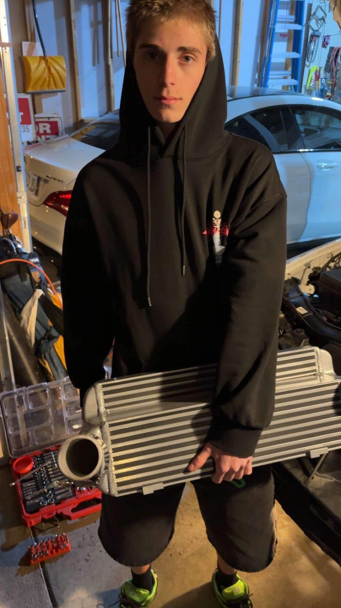
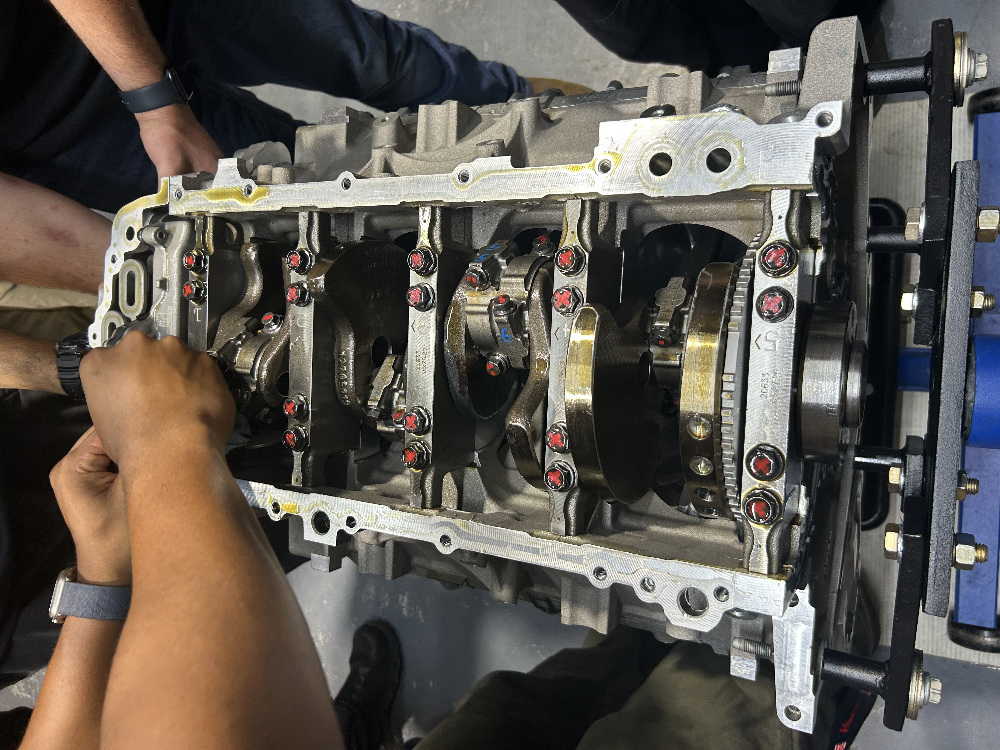
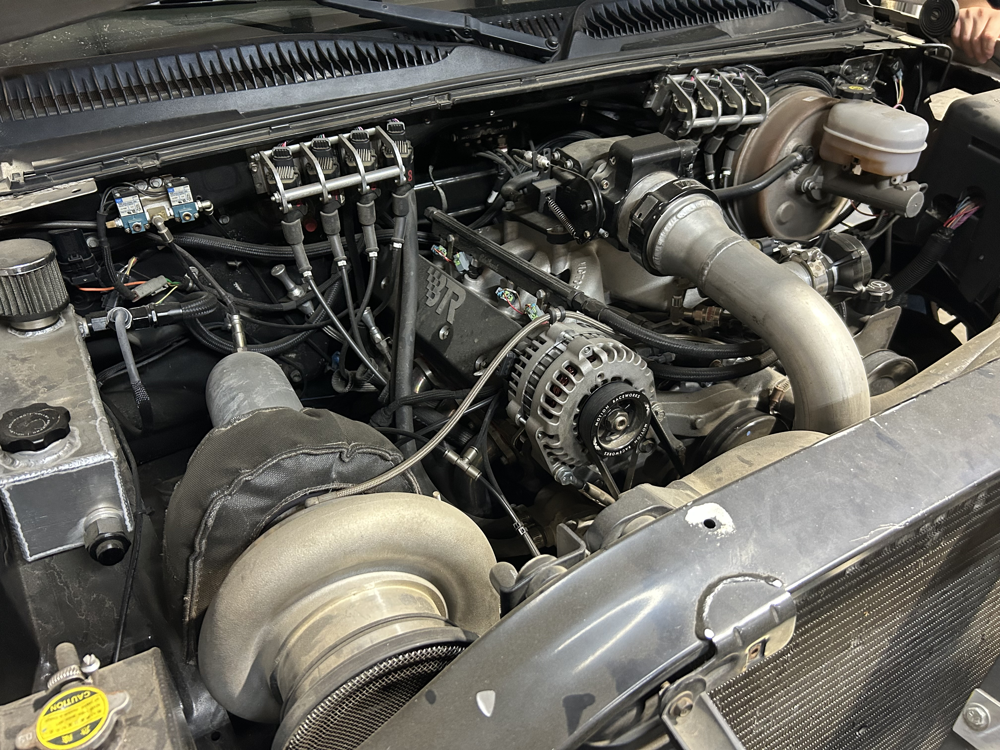
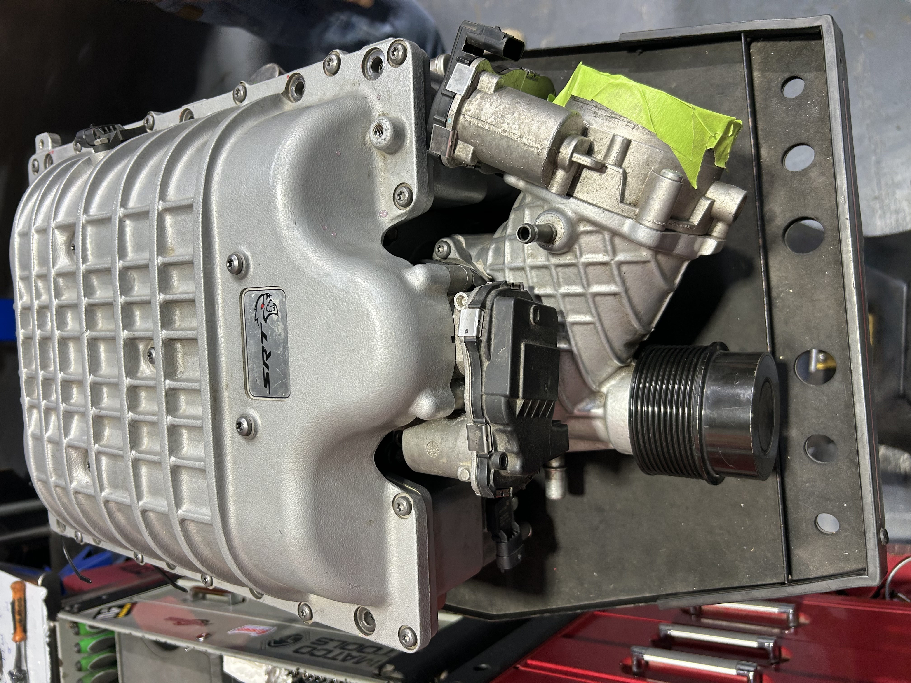
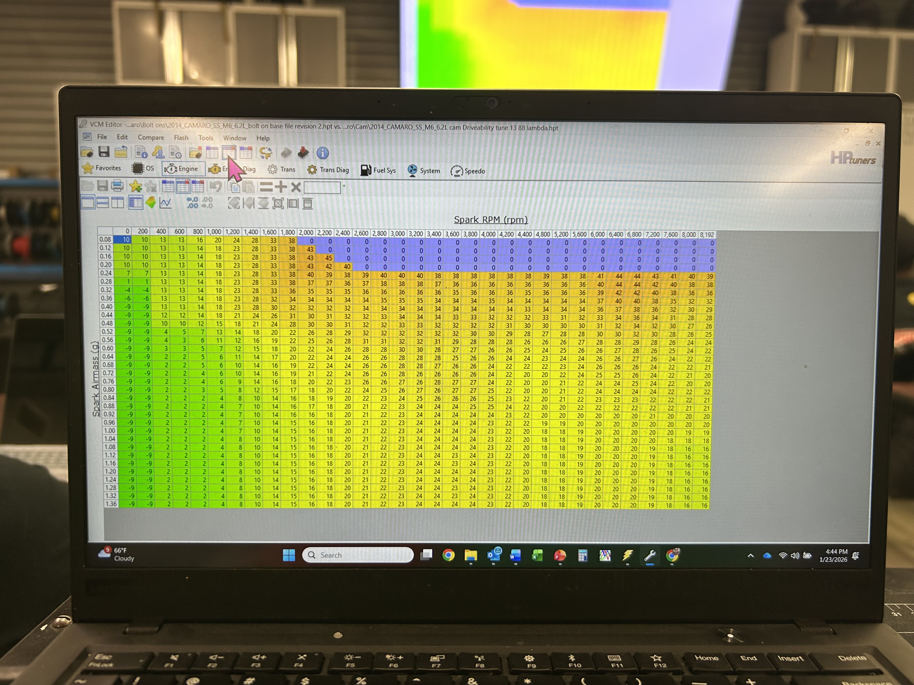
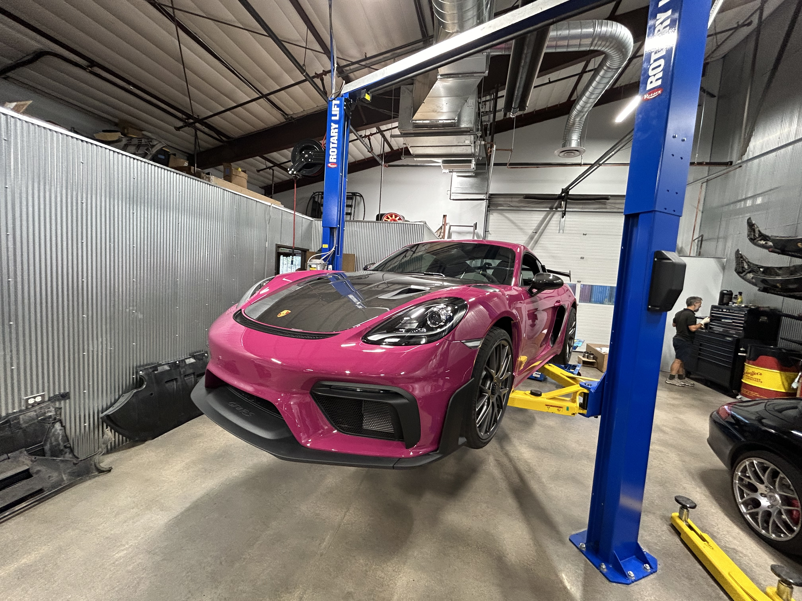
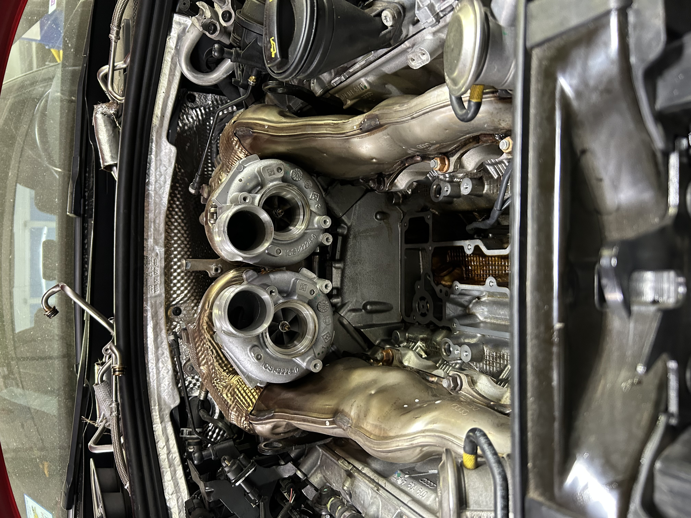

"Full builds. Real tunes. Zero guesswork."
Performance Technician & ECU Tuner · Denver, CO · Open to Relocation
I fell in love with cars the moment I started driving. Growing up, I wanted to build my own Batmobile — that obsession never went away. I already had the mechanical side covered, so I chose tuning to complete the picture. My goal is simple: to be the one person who can handle every part of a build, from the ground up.
Hennessey Tuner School graduate (Class 100 & 200) with hands-on experience building and tuning high-horsepower American muscle cars and European turbo platforms. Proficient in HP Tuners and Holley EFI with exposure to MoTeC and Link standalone ECUs. Bilingual in English and Spanish.
I use AI as a resource across everything I do — from diagnosing tunes to building tools — but every decision still comes from my own understanding of the data.

Hennessey Tuner School — Sealy, TX · Aug 2025 – Apr 2026






A full multi-tab web application covering every major calculation a tuner needs on the floor. Built and distributed to classmates at Hennessey Tuner School. Includes global search, light/dark mode, and print support.
Web tool for planning and tracking the full cost of a build — parts, labor, and modifications broken down in one place.
Multiple e-commerce websites built using AI-assisted development.
Personal resume and portfolio website built to present skills and experience to potential employers in the performance industry.